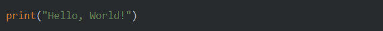
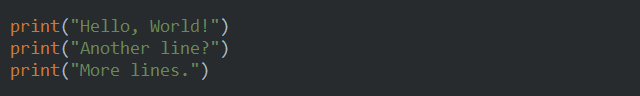
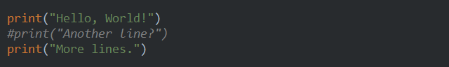
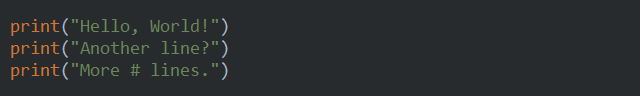
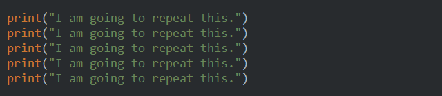

Lesson 1 - first steps¶
Follow the steps for setup, as described in Create project
First program¶
Type the following line into main editor window:
Now, press Shift+F10 to run the project. You should see the Run tab open with the following text:
Hello, World!
Note
PyCharm adds it own output to our “Hello, World!”. For now you can ignore it. Soon we will launch our program outside of the development environment.
More prints¶
Let’s add more printing. Extend your program with two more prints:
Run the above example and you should see this:
Hello, World!
Another line?
More lines.
Try to experiment a little. What would happen, if you forget to type ) or "?
Commenting¶
Put the octothorpe character (‘#’) as the first character on the second line and run the programm:
What happened?
Now, see what happens if you put the same character inside the string being printed:
You probably noticed that entire string is printed, including #. The reason is that processing of characters inside strings is different to other parts of the language. For instance, special characters, such as octothorpe, are interpreted differently.
As we just saw, you can use # character to “block” lines from execution without actually removing them. This is useful for disabling some part of the program temporarily. Often this is needed during some experimenting and testing some new things.
Another good reason to use #, is to provide explanations about the code inside the code itself. This is called commenting.
Copying and pasting¶
If you want to repeat some code, you can use copy-pasting. First you copy the portion of the code into so-called clipboard, put the cursor into destination, and paste copied code from the clipboard to the destination. Here is how you do it:
- Select the code by pressing
Shiftand using arrow keys to expand the selection - Press
Ctrl+Cto copy - Move the cursor to the new place by either using arrow keys or clicking with the mouse
- Press
Ctrl+Vto paste
Try this new way to produce the following program:
As expected, when run, it prints the same sentence five times:
I am going to repeat this.
I am going to repeat this.
I am going to repeat this.
I am going to repeat this.
I am going to repeat this.